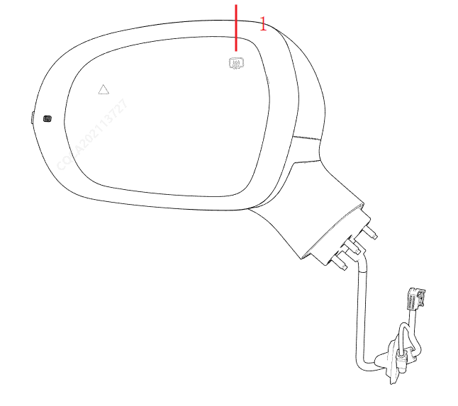
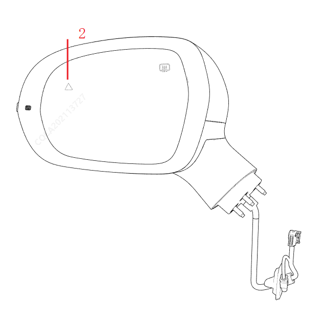

通过镜片调节，检查左右镜片的上下左右调节功能是否正常。
如果镜片上有电加热符号（1），请在中控屏上打开开关，等待大约5～10分钟，如果用手触摸镜片有明显发热，表示镜片的加热功能正常。如果没有电加热符号，则表示无电加热功能。

钥匙锁车，检查外后视镜是否正常折叠。钥匙解锁，检查外后视镜是否正常复位。按中控屏上的折叠开关，检查外后视镜是否正常折叠、复位。
按下顶棚上的双闪开关，检查外后视镜上的侧转向灯是否正常闪亮。
整车上电 ，检查左右镜片上的并线提示灯（2）是否点亮（时间大约3秒）。
